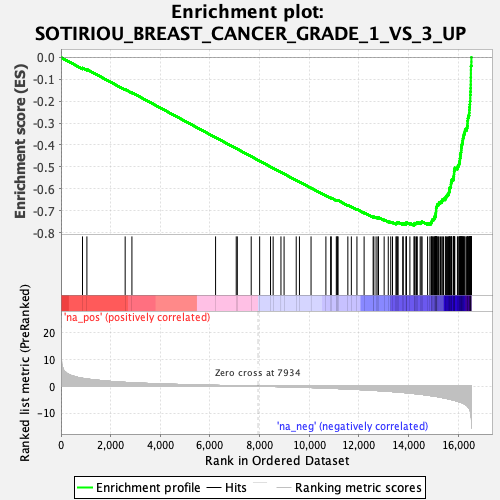
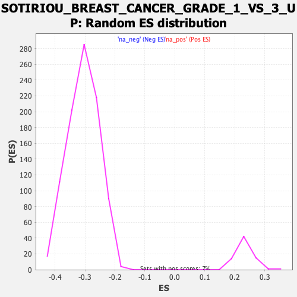

| | | Dataset | DE_genes2 |
| Phenotype | NoPhenotypeAvailable |
| Upregulated in class | na_neg |
| GeneSet | SOTIRIOU_BREAST_CANCER_GRADE_1_VS_3_UP |
| Enrichment Score (ES) | -0.76833653 |
| Normalized Enrichment Score (NES) | -2.5148346 |
| Nominal p-value | 0.0 |
| FDR q-value | 0.0 |
| FWER p-Value | 0.0 |
Table: GSEA Results Summary

Fig 1: Enrichment plot: SOTIRIOU_BREAST_CANCER_GRADE_1_VS_3_UP
Profile of the Running ES Score & Positions of GeneSet Members on the Rank Ordered List
| PROBE | GENE SYMBOL | GENE_TITLE | RANK IN GENE LIST | RANK METRIC SCORE | RUNNING ES | CORE ENRICHMENT | | 1 | TUBA1A | | | 866 | 2.911 | -0.0481 | No |
| 2 | ORMDL2 | | | 1043 | 2.686 | -0.0544 | No |
| 3 | QPRT | | | 2584 | 1.397 | -0.1461 | No |
| 4 | SLC52A2 | | | 2856 | 1.262 | -0.1606 | No |
| 5 | COX7B | | | 6225 | 0.297 | -0.3656 | No |
| 6 | STMN1 | | | 7057 | 0.145 | -0.4161 | No |
| 7 | APOBEC3B | | | 7101 | 0.134 | -0.4185 | No |
| 8 | HCCS | | | 7660 | 0.039 | -0.4525 | No |
| 9 | NUTF2 | | | 8000 | -0.012 | -0.4731 | No |
| 10 | TUBA1C | | | 8438 | -0.083 | -0.4997 | No |
| 11 | SNRPC | | | 8544 | -0.101 | -0.5059 | No |
| 12 | LAGE3 | | | 8858 | -0.162 | -0.5247 | No |
| 13 | HMCES | | | 8984 | -0.189 | -0.5321 | No |
| 14 | BYSL | | | 9473 | -0.306 | -0.5613 | No |
| 15 | UBE2N | | | 9603 | -0.340 | -0.5686 | No |
| 16 | NUP93 | | | 10070 | -0.480 | -0.5963 | No |
| 17 | MRPL12 | | | 10668 | -0.683 | -0.6316 | No |
| 18 | STIP1 | | | 10858 | -0.745 | -0.6419 | No |
| 19 | CDK2 | | | 10886 | -0.760 | -0.6423 | No |
| 20 | POLR2K | | | 11087 | -0.837 | -0.6532 | No |
| 21 | SHMT2 | | | 11115 | -0.846 | -0.6534 | No |
| 22 | TUBA1B | | | 11131 | -0.853 | -0.6529 | No |
| 23 | PSMA7 | | | 11159 | -0.865 | -0.6532 | No |
| 24 | PTTG3P | | | 11552 | -1.029 | -0.6754 | No |
| 25 | CCT5 | | | 11693 | -1.083 | -0.6822 | No |
| 26 | MRPL15 | | | 11918 | -1.185 | -0.6939 | No |
| 27 | STIL | | | 12207 | -1.330 | -0.7093 | No |
| 28 | SNRPG | | | 12571 | -1.519 | -0.7290 | No |
| 29 | CMC2 | | | 12600 | -1.532 | -0.7282 | No |
| 30 | E2F8 | | | 12689 | -1.584 | -0.7310 | No |
| 31 | ITCH | | | 12763 | -1.626 | -0.7328 | No |
| 32 | TIMM10 | | | 12786 | -1.638 | -0.7314 | No |
| 33 | NUDT1 | | | 13014 | -1.779 | -0.7424 | No |
| 34 | RNASEH2A | | | 13180 | -1.879 | -0.7494 | No |
| 35 | UBE2S | | | 13279 | -1.941 | -0.7522 | No |
| 36 | HMGB3 | | | 13350 | -1.994 | -0.7532 | No |
| 37 | SNRPF | | | 13489 | -2.094 | -0.7582 | No |
| 38 | TIMELESS | | | 13518 | -2.107 | -0.7565 | No |
| 39 | MRPS17 | | | 13547 | -2.128 | -0.7547 | No |
| 40 | DDX39A | | | 13577 | -2.146 | -0.7530 | No |
| 41 | NME1 | | | 13763 | -2.298 | -0.7605 | No |
| 42 | MCM3 | | | 13783 | -2.315 | -0.7579 | No |
| 43 | GMPS | | | 13895 | -2.413 | -0.7607 | No |
| 44 | DSN1 | | | 13907 | -2.424 | -0.7574 | No |
| 45 | FEN1 | | | 13911 | -2.426 | -0.7537 | No |
| 46 | NEK2 | | | 14051 | -2.552 | -0.7580 | No |
| 47 | KIF20A | | | 14222 | -2.716 | -0.7639 | Yes |
| 48 | JMJD6 | | | 14224 | -2.717 | -0.7595 | Yes |
| 49 | ESPL1 | | | 14262 | -2.749 | -0.7573 | Yes |
| 50 | KPNA2 | | | 14317 | -2.796 | -0.7560 | Yes |
| 51 | TXN | | | 14349 | -2.826 | -0.7533 | Yes |
| 52 | PTTG1 | | | 14464 | -2.952 | -0.7554 | Yes |
| 53 | GTPBP4 | | | 14505 | -2.989 | -0.7530 | Yes |
| 54 | CENPU | | | 14542 | -3.039 | -0.7502 | Yes |
| 55 | PDSS1 | | | 14763 | -3.317 | -0.7582 | Yes |
| 56 | DNAJC9 | | | 14857 | -3.434 | -0.7583 | Yes |
| 57 | MCM4 | | | 14906 | -3.510 | -0.7555 | Yes |
| 58 | CDCA3 | | | 14921 | -3.539 | -0.7506 | Yes |
| 59 | PSMD12 | | | 14941 | -3.567 | -0.7459 | Yes |
| 60 | RACGAP1 | | | 14957 | -3.580 | -0.7410 | Yes |
| 61 | MCM2 | | | 15006 | -3.658 | -0.7379 | Yes |
| 62 | E2F1 | | | 15036 | -3.695 | -0.7336 | Yes |
| 63 | TACC3 | | | 15038 | -3.698 | -0.7277 | Yes |
| 64 | CDC25A | | | 15082 | -3.764 | -0.7241 | Yes |
| 65 | CKS2 | | | 15086 | -3.767 | -0.7182 | Yes |
| 66 | SLC7A5 | | | 15093 | -3.780 | -0.7124 | Yes |
| 67 | CENPN | | | 15099 | -3.785 | -0.7065 | Yes |
| 68 | DONSON | | | 15105 | -3.791 | -0.7006 | Yes |
| 69 | ZWINT | | | 15107 | -3.798 | -0.6944 | Yes |
| 70 | MIS18A | | | 15108 | -3.798 | -0.6882 | Yes |
| 71 | CENPI | | | 15122 | -3.810 | -0.6828 | Yes |
| 72 | TXNRD1 | | | 15142 | -3.835 | -0.6777 | Yes |
| 73 | XPOT | | | 15155 | -3.853 | -0.6721 | Yes |
| 74 | RAD54B | | | 15206 | -3.922 | -0.6688 | Yes |
| 75 | CDCA8 | | | 15225 | -3.955 | -0.6634 | Yes |
| 76 | RAD51 | | | 15283 | -4.088 | -0.6602 | Yes |
| 77 | SPAG5 | | | 15339 | -4.181 | -0.6567 | Yes |
| 78 | EZH2 | | | 15352 | -4.214 | -0.6506 | Yes |
| 79 | CDC20 | | | 15404 | -4.309 | -0.6467 | Yes |
| 80 | VRK1 | | | 15477 | -4.445 | -0.6438 | Yes |
| 81 | MYBL2 | | | 15492 | -4.462 | -0.6374 | Yes |
| 82 | TRIP13 | | | 15527 | -4.544 | -0.6320 | Yes |
| 83 | GINS1 | | | 15564 | -4.619 | -0.6267 | Yes |
| 84 | AURKA | | | 15607 | -4.737 | -0.6215 | Yes |
| 85 | PLK1 | | | 15623 | -4.763 | -0.6146 | Yes |
| 86 | CCNB1 | | | 15643 | -4.796 | -0.6080 | Yes |
| 87 | KIFC1 | | | 15645 | -4.799 | -0.6002 | Yes |
| 88 | OIP5 | | | 15659 | -4.836 | -0.5931 | Yes |
| 89 | RRM2 | | | 15702 | -4.911 | -0.5876 | Yes |
| 90 | UBE2C | | | 15704 | -4.913 | -0.5796 | Yes |
| 91 | FOXM1 | | | 15710 | -4.931 | -0.5719 | Yes |
| 92 | BLM | | | 15728 | -4.957 | -0.5648 | Yes |
| 93 | BIRC5 | | | 15741 | -4.998 | -0.5574 | Yes |
| 94 | RFC4 | | | 15807 | -5.149 | -0.5530 | Yes |
| 95 | CDK1 | | | 15810 | -5.156 | -0.5447 | Yes |
| 96 | TROAP | | | 15823 | -5.203 | -0.5369 | Yes |
| 97 | MCM6 | | | 15829 | -5.218 | -0.5287 | Yes |
| 98 | CCNB2 | | | 15832 | -5.225 | -0.5203 | Yes |
| 99 | NCAPH | | | 15843 | -5.247 | -0.5123 | Yes |
| 100 | TPX2 | | | 15859 | -5.288 | -0.5046 | Yes |
| 101 | CHEK1 | | | 15965 | -5.552 | -0.5019 | Yes |
| 102 | PARPBP | | | 15988 | -5.636 | -0.4940 | Yes |
| 103 | GTSE1 | | | 16026 | -5.744 | -0.4869 | Yes |
| 104 | MAD2L1 | | | 16043 | -5.805 | -0.4784 | Yes |
| 105 | KIF2C | | | 16061 | -5.848 | -0.4699 | Yes |
| 106 | TMPO | | | 16067 | -5.864 | -0.4606 | Yes |
| 107 | ECT2 | | | 16082 | -5.906 | -0.4518 | Yes |
| 108 | KIF18B | | | 16087 | -5.923 | -0.4424 | Yes |
| 109 | PRC1 | | | 16103 | -5.960 | -0.4336 | Yes |
| 110 | CCNE2 | | | 16115 | -5.986 | -0.4245 | Yes |
| 111 | AURKB | | | 16120 | -6.007 | -0.4149 | Yes |
| 112 | MELK | | | 16129 | -6.045 | -0.4055 | Yes |
| 113 | BUB1 | | | 16142 | -6.084 | -0.3963 | Yes |
| 114 | FBXO5 | | | 16169 | -6.210 | -0.3877 | Yes |
| 115 | LMNB1 | | | 16178 | -6.259 | -0.3780 | Yes |
| 116 | NCAPG2 | | | 16188 | -6.289 | -0.3683 | Yes |
| 117 | HJURP | | | 16210 | -6.380 | -0.3591 | Yes |
| 118 | KIF4A | | | 16226 | -6.459 | -0.3495 | Yes |
| 119 | PKMYT1 | | | 16257 | -6.586 | -0.3406 | Yes |
| 120 | CDC45 | | | 16272 | -6.693 | -0.3305 | Yes |
| 121 | BUB1B | | | 16335 | -7.102 | -0.3227 | Yes |
| 122 | DSCC1 | | | 16359 | -7.253 | -0.3122 | Yes |
| 123 | NUSAP1 | | | 16374 | -7.420 | -0.3010 | Yes |
| 124 | CCNA2 | | | 16376 | -7.439 | -0.2889 | Yes |
| 125 | EXO1 | | | 16387 | -7.570 | -0.2771 | Yes |
| 126 | KIF11 | | | 16409 | -7.860 | -0.2656 | Yes |
| 127 | CENPA | | | 16438 | -8.139 | -0.2540 | Yes |
| 128 | TTK | | | 16444 | -8.189 | -0.2409 | Yes |
| 129 | KIF15 | | | 16449 | -8.254 | -0.2277 | Yes |
| 130 | CDKN3 | | | 16463 | -8.532 | -0.2145 | Yes |
| 131 | MCM10 | | | 16471 | -8.676 | -0.2008 | Yes |
| 132 | DLGAP5 | | | 16482 | -9.145 | -0.1865 | Yes |
| 133 | MKI67 | | | 16483 | -9.193 | -0.1714 | Yes |
| 134 | POLQ | | | 16490 | -9.648 | -0.1560 | Yes |
| 135 | TOP2A | | | 16497 | -9.873 | -0.1403 | Yes |
| 136 | CENPE | | | 16501 | -10.010 | -0.1241 | Yes |
| 137 | KIF14 | | | 16503 | -10.060 | -0.1077 | Yes |
| 138 | NCAPG | | | 16504 | -10.079 | -0.0913 | Yes |
| 139 | CENPF | | | 16507 | -10.688 | -0.0739 | Yes |
| 140 | CEP55 | | | 16508 | -10.710 | -0.0564 | Yes |
| 141 | ASPM | | | 16510 | -10.824 | -0.0388 | Yes |
| 142 | NDC80 | | | 16527 | -12.233 | -0.0198 | Yes |
| 143 | HMMR | | | 16528 | -12.240 | 0.0002 | Yes |
Table: GSEA details [plain text format]

Fig 2: SOTIRIOU_BREAST_CANCER_GRADE_1_VS_3_UP: Random ES distribution
Gene set null distribution of ES for SOTIRIOU_BREAST_CANCER_GRADE_1_VS_3_UP